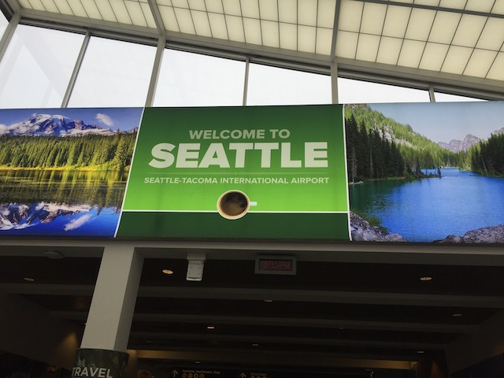
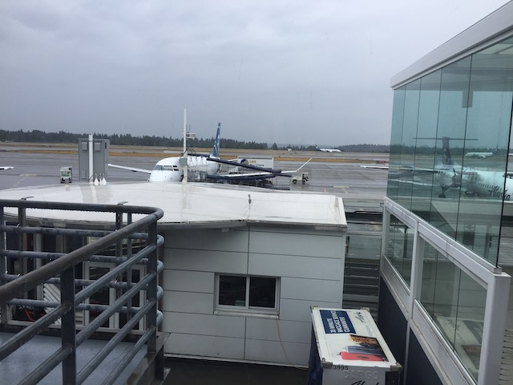
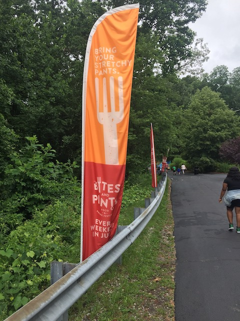
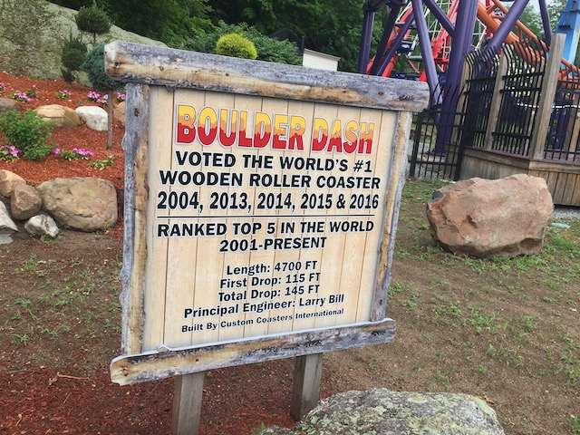
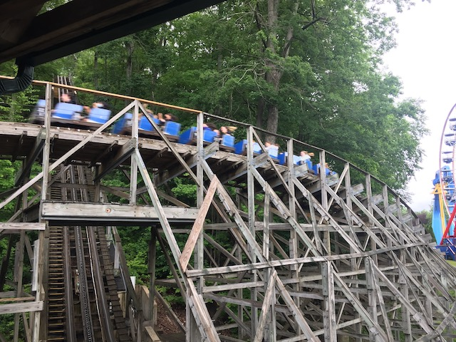
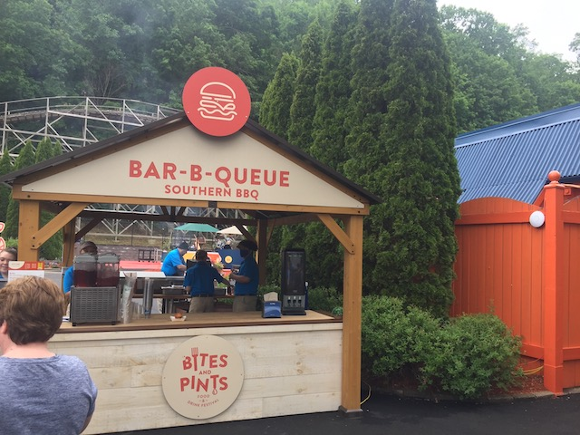

| |
East Coast Trip 2021
Lake Compounce Six Flags New England New York City American Dream Coney Island Six Flags Great Adventure
Casino Pier & Playland's Castaway Cove Dorney Park Cedar Point Kings Island Columbus Zoo & Waldameer Kennywood
Idlewild & Lakemont Park Hersheypark Knoebels

All right. Time for another Incrediblecoasters Trip. Now, this trip was....without a doubt, the most complicated trip we've planned. Not for any travel planning logistical challenges. But rather, the basic idea of an East Coast Trip, like this, was meant to happen in 2020. Except, we all know how that year went. So thanks to the COVID-19 pandemic, ALL of our original 2020 plans became our 2021 plans. And with so much time, this trip went through a TON of changes, but eventually came to encompass a lot of the East Coast parks I visited a long time ago as a teenager and hadn't visited in over a decades, as well as hitting up some of the best coasters in America, as well as most of the parks that got new rides for either 2020 or 2021. So yeah. This trip was f*cking awesome. And of course, when heading out for an East Coast Trip, make sure you fly into Seattle. Cause that's on the East Coast. Right? =P
So, for breakfast, I tried Beechers, since that's a local Seattle thing. They seem to specialize in all things cheese. And....they did have a good Grilled Cheese sandwich.
Just what an overpriced frappucino needs. Stale funnel cake peices.

OK. Time to get on the 2nd plane and actually fly to the East Coast now.
Hello New York City. See you in a couple days.
Time for a quick little jaunter into New England.
Hey look! It turns out that New York is full of sh*t after all!
 Enough is enough! Time to hit the first park of the trip, Lake Compounce!
Enough is enough! Time to hit the first park of the trip, Lake Compounce!

And of course, we happened to hit up the park during their Food Festival, Bites 'N' Pints (Love this trend). So I'm excited to see what sort of items they're serving here.
Because this'll totally be enforced. All the idiot Anti-Vaxxers (You're all dying of COVID you f*cking morons) will surely put on a mask. Because we all know how since they're all anti-vax, then they must be Pro-Mask *eye roll*.
Damn. Hard to believe Lake Compounce is that old.
Oh no! Zoomerang is closed today! No Boomerang credit (at Lake Compounce) for you today Scott & Steve. How sad. =P
Why am I, someone who lives in SoCal, getting a season pass for Lake Compounce!? A park in Conneticuit that I'm only planning on visiting once this year? Well, it's not just for Lake Compounce, but for all the Palace Parks. So between this trip also featuring Kennywood, Idlewild, getting a bonus stop at Dutch Wonderland later on (Oops. Trip Spoilers), this season pass pays for itself. Let alone us visiting Raging Waters & Castle Park later on in the year after this trip was over.
Hello Lake Compounce. I really enjoyed visiting you 10 years ago. And I'm really looking foreward to returning today.
Oh boy. I can't wait to ride Boulderdash while suffering from the Vaccine Side-Effects (The side effects may be a bitch, but still get vaccinated. I, Mr. "I hate needles", should NOT be the one telling you people this)! =)
But first, time for the first new credit of 2021.
Aww Damn. Morning technical difficulties. Gonna have to come back for it later in the day.
Not a problem. While Phobia looks fun (as are all the other Sky Rockets), getting rerides on this is the real reason I was looking foreward to returning to Lake Compounce.

Yeah. Starting off with the theme of hitting up some of the best coasters in America, Boulderdash really is that good.
 Still one of the best wooden coasters ever!
Still one of the best wooden coasters ever!

While not running as good this year as it was in 2011 (I partially blame that to simply not having that amazing night ERT of the Northeast Trip, as well as it being a little more sluggish from just recently coming out of hibernation after being closed all of 2020 thanks to COVID, and not being fully warmed up), it still is mean, brutal, agressive, and I love it.
 All right. With Phobia still closed, let's just get this over with.
All right. With Phobia still closed, let's just get this over with.
Showing off the old cars the ride used to run.
Just a quick reminder that the ACE Plaque is NOT a seal of quality. =)
So, to show Wildcat some tender love and care, Lake Compounce upgraded the ride to give it Millenium Flyers from GCI.
Unfortunately, this was a classic example of putting lipstick on a pig, and just proves that adding fancy new trains isn't gonna fix your coaster.
 So I never liked Wildcat, and always regarded it as a sh*tty coaster (and I'm not saying that just because it's in the same park as Boulderdash). However, it was REALLY bad this time. Damn near Bottom 10 Coasters bad.
So I never liked Wildcat, and always regarded it as a sh*tty coaster (and I'm not saying that just because it's in the same park as Boulderdash). However, it was REALLY bad this time. Damn near Bottom 10 Coasters bad.
Seriously, this thing damn near gave me a spinal adjustment. Starting to think the Millenium Flyers were just a cheap way to soften the blow of the roughness. Seriously, Lake Compounce needs to retrack Wildcat BADLY (I would say tear it down, except this is a historical coaster)!!!
I don't think I mentioned this last time, but the theming on Downtime is probably my favorite of any S&S Tower not at Disney or Universal (No wait. This is themed WAY better than Maliboomer was. So just Universal then). The ticking clock at the top, while simple, really makes the ride a lot more fun. Plus, the clock theming at the bottom that syncs with the ride, is also really cool.
Guys, I'm getting worried about Phobia. The car is just sitting there and I don't see ANYONE working on it.
Hey look. Yet ANOTHER ride at Lake Compounce closed today.
 Hey, might as well take a ride on their shooting dark ride, Ghost Hunt.
Hey, might as well take a ride on their shooting dark ride, Ghost Hunt.
This was both a lot better than I remembered, as well as a lot more difficult. I forgot that this was its own unique ride and not just another Boo Blasters clone.
You know, it's been too long since my last Screamin Swing (even excluding the COVID Shutdown time). Kind of forgot that these really are just fun rides.
 All right. That's enough rides for now. Let's check out the Bites'N'Pints Food Festival and see what they're serving.
All right. That's enough rides for now. Let's check out the Bites'N'Pints Food Festival and see what they're serving.

Between all of the Food Festivals we've done, I'm very excited to add another food festival to our list. Though sadly, this was my least favorite of the 5 we've done now.
Hmm. So many choices. What to get?
All right. First up, Mamma Mia Tacos. Hey, I like Pesto. I like tacos. You wouldn’t think these go together, but it’s really good. Sure, wish the tortilla shell was cooked, but it’s still really good. Highly recommended if you like pesto (Thank god I took notes at the park of the food. That helped make the update tremendously). =)
 Next up, we have the Big James Burger. OK, This was REALLY good. Not only was it well cooked, but it being slathered in both BBQ sauce and Chipotle really helped it. Favorite item at the festival.
Next up, we have the Big James Burger. OK, This was REALLY good. Not only was it well cooked, but it being slathered in both BBQ sauce and Chipotle really helped it. Favorite item at the festival.
Moving onto needing something to drink, we have the Abita Purple Haze Beer. Very good beer. Mild taste, slight Raspberry flavor, just an all around really good beer. =)
And for dessert, we got the Carmel Banana Poundcake. Honestly, this was disappointing. Primarily because the cake part felt stale and kind of dry. The Carmel banana part was really good. I enjoyed that. Honestly, the problem was the poundcake part. Not bad, but could be greatly improved.
 GOD DAMN IT!!! Phobia isn't opening at all today. Guess I was wrong about this being my first new credit of 2021. While not a huge deal as these Sky Rockets are very common rides with one being at a SoCal park (Electric Eel @ Sea World San Diego), they still are really fun rides, and it's a shame about it being closed. =(
GOD DAMN IT!!! Phobia isn't opening at all today. Guess I was wrong about this being my first new credit of 2021. While not a huge deal as these Sky Rockets are very common rides with one being at a SoCal park (Electric Eel @ Sea World San Diego), they still are really fun rides, and it's a shame about it being closed. =(
*Sigh* The Disk-O is closed too. Only was testing. Not impressed with that.
Yeah. It's nothing special and I already have this credit. But just the sheer fact that more than half ot the rides here are closed pisses me off.
Back for another round of food. For Item #5, we have the Chicken & Waffle Slider. I’m sorry Southerners, I normally am a big fan of your food. But I just am not big on this combo. Granted, maybe the fact that it didn’t have syrup and instead had some weird mustard sauce that felt too mild for me contributed. But...I just don’t care for Chicken and Waffles.
Item #6. Taoy Mac and Cheese. I know I love mac and cheese and everyone else was saying this was a really good one. And....yeah. It’s good (I do love Mac and cheese). But it's not as good as other people claimed. There’s better Mac and Cheese out there.
Time for more booze. Item #7. Jack Daniels Lemonade. It’s Lemonade with Bourbon. Good. Exactly how you think it’ll be.
And finally, we have the Apple Pie Cake. *Sigh* God damn it Lake Compounce. Once again, you have a really good idea ruined (or weakened) by a poorly made cake. Everything else was good. But....cakes should not be crunchy. Just a heads up.
 All right. Aside from food, there's always Boulderdash. So yeah. Let's get a reride on that.
All right. Aside from food, there's always Boulderdash. So yeah. Let's get a reride on that.
 Once again, I have to say that this is the ride that the Beast SHOULD be. I can not think of a coaster that takes better advantage of its terrain and surroundings than Boulderdash.
Once again, I have to say that this is the ride that the Beast SHOULD be. I can not think of a coaster that takes better advantage of its terrain and surroundings than Boulderdash.
Yes, I'd like to buy Boulderdash's Golden Ticket Award please (Would love to see the look on the TSA agents face bringing that through airport security).
So we decided to leave Lake Compounce a little early simply since....our day here has been really dissapointing. Yes, getting on Boulderdash was great. But with half of the rides being closed, including their new ride, Phobia, sub-par operations, and some items at the food festivals really being dissapointments (the desserts come to mind), I really was dissapointed, especially when I really liked the park a lot in 2011. This was the biggest dissapointment of the entire trip (Spoilers). However, I do think that this was just a fluke bad day, and that the park will bounce back. Plus, a couple friends know someone who's really high up in Palace, so....I may be able to meet him and....give him some helpful suggestions on the park. But hey. Let's get a head start to our next park and ride one of the most anticipated coasters of the trip.
Six Flags New England
Home
|